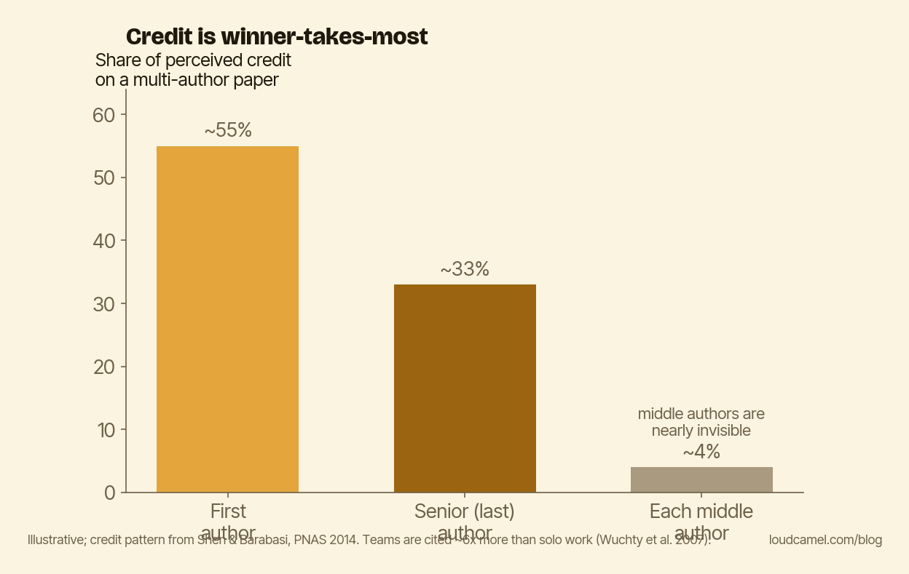

The credit problem in team science
Think about the last multi-author paper you contributed to where you were neither first nor last author. You did real work: an analysis, a dataset, a piece of the methods. Now ask who, six months later, an evaluator would credit for that work.
Probably not you. That is the core of this post: teams produce most of the impact in science, but on any given paper one author captures most of the credit. If you are not first or last author, you are probably under-credited no matter how much you put in.
Start with where impact actually comes from. Wuchty, Jones and Uzzi looked at almost 20 million papers and 2 million patents going back to 1955 (Wuchty, Jones & Uzzi, Science, 2007). Across nearly every discipline, teams have been displacing solo authors for fifty years, and team-authored papers get cited substantially more. In the sciences, the average team paper is cited about 6 times more than the average solo paper from the same field and era, and the gap has been widening since the 1950s.

The chart above shows both halves of the problem: team papers pulling ahead on impact, and credit on those papers landing almost entirely on one or two authors. Solo work is no longer the default route to impact, even in fields that still romanticize the lone genius.
Who actually gets the credit
So you collaborate. Then comes the second question: when the paper lands, who does the community credit for it?
Shen and Barabasi modeled how credit gets assigned implicitly on multi-author papers, and validated the model against cases where credit is unambiguous, like Nobel prizes and prize lectures (Shen & Barabasi, PNAS, 2014). The result is uncomfortable. On a typical multi-author paper, the first author captures the majority of the perceived credit. The last, senior author gets most of what remains. Middle authors are close to statistical noise, largely invisible to the credit-assignment process unless they do something extra to be seen.
In fields that use alphabetical authorship, like economics and parts of math, the asymmetry attaches to seniority and visibility instead of list position. It does not go away. It just moves.
Two things this means for you
Put the two findings together. Impact lives in teams, so you should collaborate. Credit does not redistribute itself, so you have to be deliberate about how. Every collaboration you enter as a middle author is roughly a year of work that probably will not be visible to a future evaluator. Sometimes that is worth it. Rarely is it worth doing by default.
That cashes out on two axes.
On the team axis: prefer projects where you are first or last author, or where you own a clearly attributable piece, the methods, the dataset, the software package. A contribution with your name welded to it survives the credit math.
On the visibility axis: when a multi-author paper comes out, the publication does not make your contribution visible. The first author’s promotion of it does. If you were a middle author on something you actually drove, you have to do your own visibility work on top of the publication: the plain-language summary, the discussion post, the talk. That is how you reclaim credit the citation network will not hand you.
Do this now
Pick one paper where you were a middle author on something you actually drove: a method, a dataset, an analysis. Write two sentences naming your specific contribution. Post them on your personal site, your ORCID, or LinkedIn, attached to that paper. Five minutes.
Say out loud what you did, before the network forgets you did it. And before you sign onto the next project as a middle author by default, decide whether you are willing to do that visibility work, because the paper alone will not do it for you.
This post is part of the Loud Camel field guide to academic visibility. You can read the whole guide as a single PDF: the handbook.